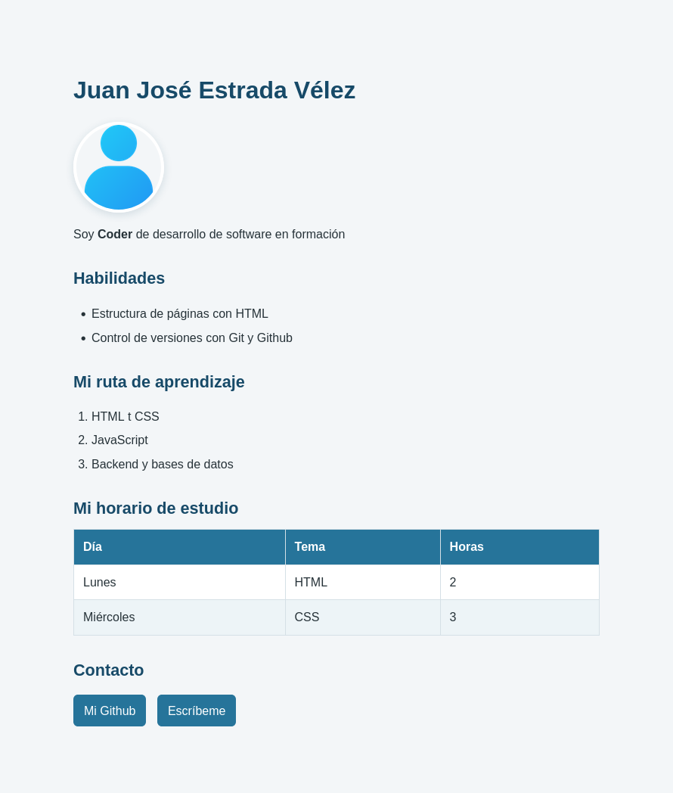
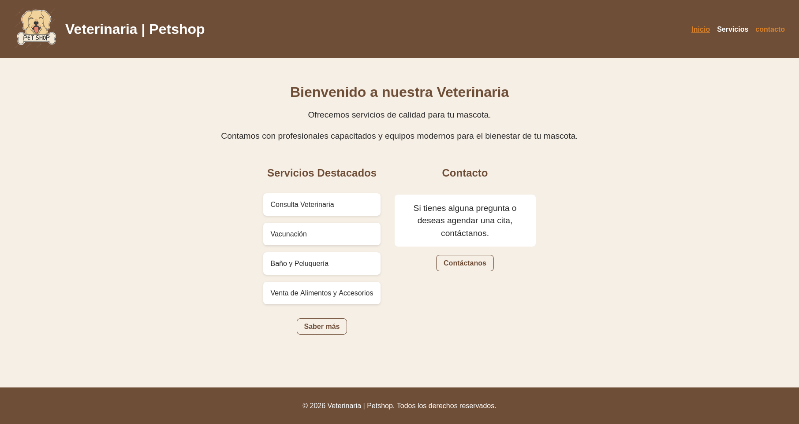
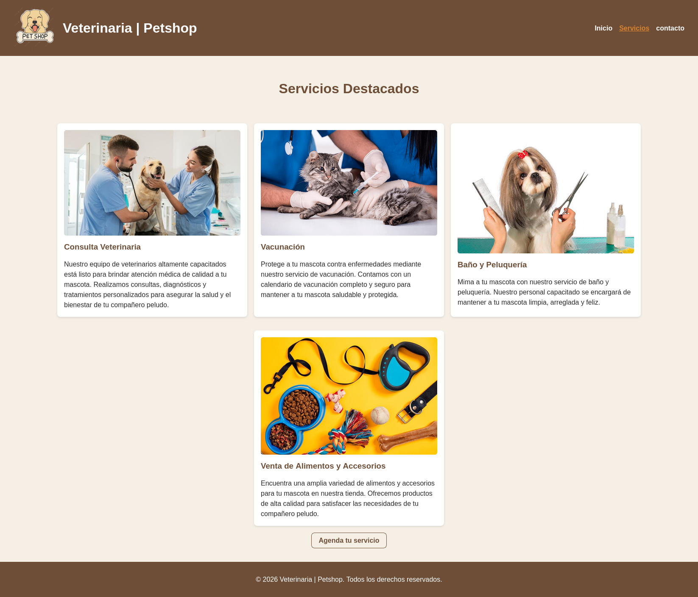
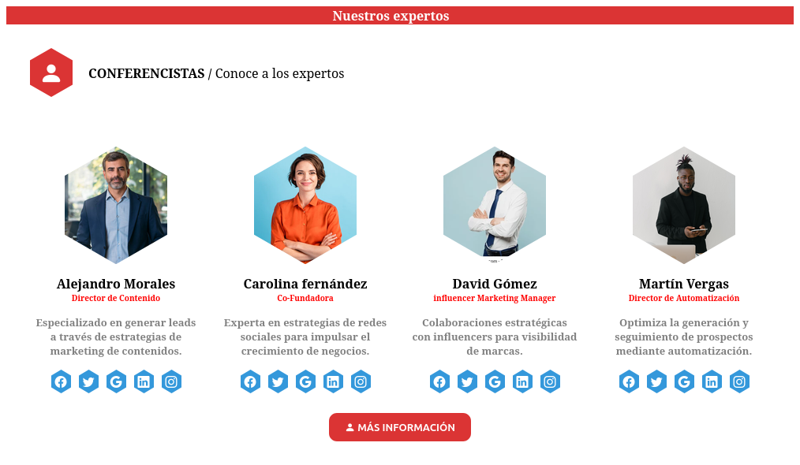
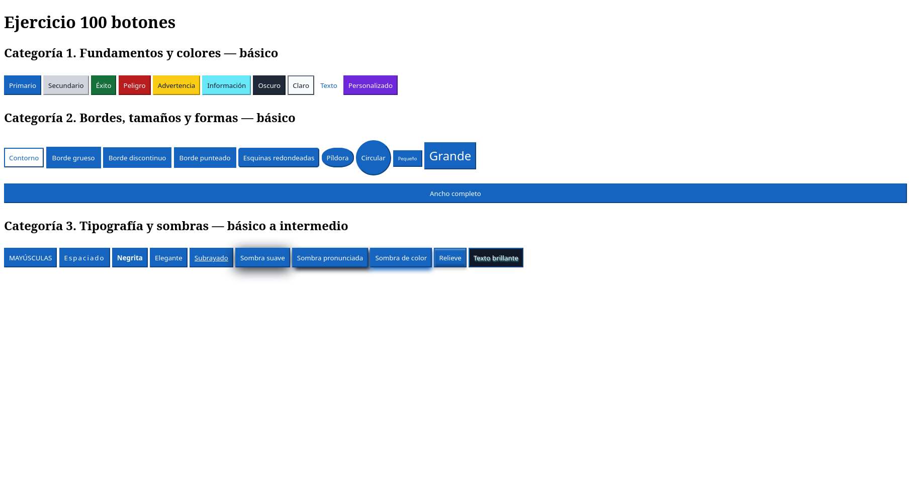

Página: Hoja de Vida - Actividad día 1.
Vimos por primera vez algunas etiquetas de html como los títulos, las listas, las tablas, los links y además practicar un poco de estilos de css
Ver en vivo Ver repositorioColaboré en el desarrollo de una plataforma web para gestionar clientes y tareas. Implementé componentes de interfaz con React, desarrollé endpoints con Node.js y Express, y trabajé con una base de datos PostgreSQL. También participé en revisiones de código, pruebas y corrección de errores.
Experiencia simulada para una actividad académica

Vimos por primera vez algunas etiquetas de html como los títulos, las listas, las tablas, los links y además practicar un poco de estilos de css
Ver en vivo Ver repositorio

Entregable correspondiente al día 2 y 3, el cual corresponde a una web la cual contenga 3 páginas correctamente enlazadas, usando una estructura semántica en el html y el uso de un formulario y por último aplicar los estilos a la página siguiendo normas de diseño, variables de estilo y el uso de medidas rem.
Ver en vivo Ver repositorio
Actividad día 2 y 3 de la semana 2, en la cual se recreó una página desarrollada previeamente como forma de aprender Booststrap y personalizar sus estilos por defecto y junto a css darle un estilo más acorde.
Ver en vivo Ver repositorio
Se desarroló una página estática mediante HTML y CSS, donde se puso en práctica la maquetación del sitio, la organización de elementos y diseño básico de la web
Ver en vivo Ver repositorio
avance del proyecto de los 100 botones (30/100), actividad propuesta para conocer las diferentes estiquetas y personalizaciones con css.
Ver en vivo Ver repositorio
avance del proyecto clon de la página start bootstrap para aprender como maquetar y estilizar una página usando el framework de bootstrap v5.3.
Ver en vivo Ver repositorio